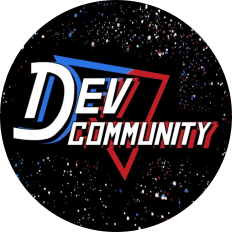
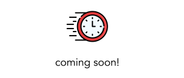

Bem-vindo! Eu sou
ENZO SAKAMOTO

Sobre mim
Me chamo Enzo Yuji Sakamoto, tenho 20 anos e sou de São Paulo, SP.
Sou entusiasta e amante da programação e informática. Desde pequeno sempre soube que seguiria minha carreira profissional trabalhando com tecnologias, procurando sempre me manter antenado sobre.
Estudante de Engenharia de Computação no Instituto Mauá de Tecnologia. Estou focado em aprender mais precisamente Python, JavaScript, Dart e C, além de outras tecnologias de desenvolvimento.
Me considero competente, ágil e extremamente bem humorado!
Experiências
Dev. Community Mauá
👀
A Dev. Community Mauá é uma entidade de desenvolvimento e criação de soluções computacionais do Instituto Mauá de Tecnologia.
Membro desde março de 2022, exercendo função de Desenvolvedor Front-End.
Atuei como Desenvolvedor Front-End e Back-End do projeto integrador do sistema da biblioteca com o site da instituição, chamado MauáLib, utilizando a linguagem de programação Dart com framework Flutter.

Projetos
MauáLib
Projeto que integra o sistema da biblioteca com o site do IMT
Tecnologias: Dart, Flutter
NutriApp
Aplicativo que consta com dados nutricionais de diversos alimentos e faz conversão de valores em função da massa
Tecnologias: Dart, Flutter

Em breve
Outros projetos
Contato
Entre em contato comigo!
enzo.sak@hotmail.com